WorkMap 실무 활용 메뉴얼
워크스페이스에서 프로젝트를 만들고, 에픽 → 업무 → 스프린트로 이어지는 실제 업무 흐름을 화면과 함께 따라가는 안내서입니다. 개발 업무와 운영 업무 두 가지 시나리오로 구성했습니다.
0핵심 개념 — 하나의 Task, 여러 관점
WorkMap을 처음 쓸 때 가장 먼저 이해할 한 가지입니다.
WorkMap에서 이슈·리스크·WBS 항목·칸반 카드·타임라인 막대는 서로 다른 데이터가 아니라 하나의 업무(Task) 데이터를 다른 방식으로 보여주는 화면입니다. 업무를 한 번 등록하면, 보드에서는 카드로, 백로그에서는 줄로, 타임라인에서는 기간 막대로, 보고서에서는 통계로 자동으로 나타납니다.
0-0업무를 어떻게 적는가 — 작성 규칙
스크럼이 잘 굴러가려면 "무엇을 만드냐"보다 "어떻게 적느냐"가 먼저입니다. 유형마다 작성자와 문장 형식이 정해져 있습니다. 이 규칙만 지켜도 팀 전체가 같은 언어로 일하게 됩니다.
① 에픽(Epic) — "…으로서, …이 필요합니다"
에픽은 여러 스프린트에 걸친 큰 목표입니다. 로드맵에 기록하며, 반드시 "…으로서"로 시작해 누가·왜 이 일이 필요한지(출처와 목적)를 드러냅니다.
[역할]으로서, [무엇]이 필요합니다.
| 좋은 예 Epic |
|---|
| 사용자로서, 블록 코딩 프로젝트를 공유하는 웹사이트가 필요합니다. |
| 개발자로서, 백엔드 개편에 따른 어드민 페이지 수정이 필요합니다. |
| 세일즈팀으로서, 라이선스를 발급하는 시스템이 필요합니다. |
② 스토리(Story) — "…는 …를 수행하여 …한다"
스토리는 고객 가치를 주는 기능 단위입니다. 에픽의 하위로 두거나, 에픽 없이 단독으로 백로그에 작성합니다. 비즈니스 언어로, 화면·API 같은 기술 용어 없이 적습니다.
[(역할을 가진) 사용자]는 [행위 / 목표]를 수행하여 [이유]를 한다.
| 좋은 예 Story |
|---|
| 어드민 사용자는 라이선스의 정보를 입력하고 라이선스 키를 발급한다. |
| 대시보드 사용자는 라이선스 키를 입력해서 사용 가능한 라이선스를 얻는다. |
| 사용자는 회원가입하고 로그인할 수 있다. |
③ Dev · Sub-task — 개발자 언어 그대로
스토리를 실제로 구현하기 위한 작업입니다. 형식 제약 없이 개발자가 쓰는 대로 적습니다. 하나가 3일을 넘기지 않도록 잘게 쪼개는 것이 좋습니다.
개발자가 작성하는 대로 (기술 언어 자유)
| 좋은 예 Task / Sub-task |
|---|
| 어드민에서 발급한 라이선스 목록 페이지 개발 |
| 라이선스 키 발급 API 개발 |
| 도메인 구매 |
한눈에 비교
| 유형 | 작성자 | 언어 | 문장 형식 | 기록 위치 |
|---|---|---|---|---|
| Epic | PO | 비즈니스 | …으로서, …이 필요합니다 | 로드맵(타임라인) |
| Story | PO | 비즈니스 | …는 …를 수행하여 …한다 | 백로그 |
| Task Sub-task |
개발자 | 기술 | 자유 (작업 그대로) | 백로그 → 스프린트 |
0-1업무 계층과 유형
업무는 6가지 유형이 있고, 큰 단위가 작은 단위를 품는 계층 구조입니다.
| 유형 | 역할 | 예시 | 하위로 가질 수 있는 것 |
|---|---|---|---|
| Epic | 큰 목표·기능 묶음. 여러 스프린트에 걸침 | "결제 시스템 개편" | Story·Task·Bug |
| Story | 사용자 관점의 기능 단위 | "간편결제 연동" | Sub-task |
| Task | 실행 작업 | "PG사 API 키 발급" | Sub-task |
| Bug | 결함·장애 | "장바구니 합계 오류" | Sub-task |
| Doc | 문서·기획서 | "결제 설계서" | — |
| Sub-task | 위 항목의 잘게 쪼갠 단위 | "단위 테스트 작성" | — |
1워크스페이스 만들기
워크스페이스(WS)는 본부·팀 단위의 독립된 작업 공간입니다. 프로젝트는 모두 워크스페이스 안에 들어갑니다.
- 로그인 후 워크스페이스 선택 화면이 열립니다. 소속된 워크스페이스가 카드로 나옵니다.
- 관리자(Owner/Admin)는 우상단 [워크스페이스 만들기]로 새 WS를 만들 수 있습니다. 이름과 설명만 입력하면 됩니다.
- 작업할 워크스페이스 카드를 클릭하면 그 WS로 진입하고, 이후 모든 화면(프로젝트·메시지·설정)이 선택한 WS 기준으로 보입니다.
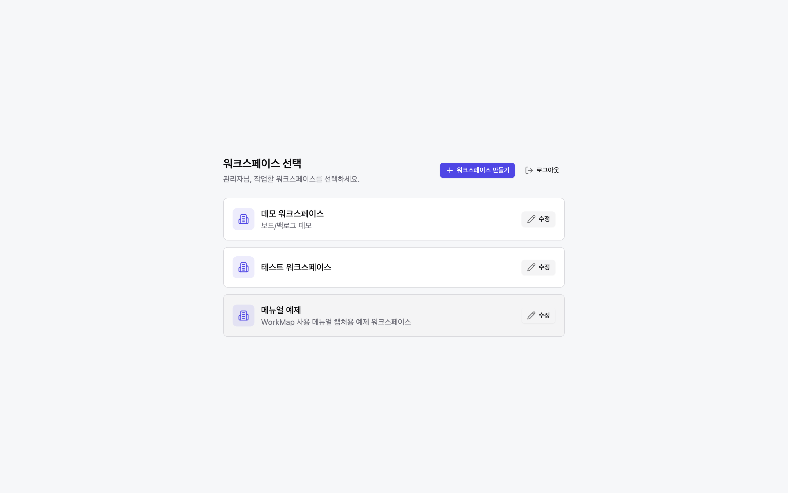
2프로젝트 만들기
프로젝트는 업무를 담는 그릇입니다. 만들 때 템플릿(유형)을 고르면 그 업무 성격에 맞는 보기(탭)와 업무 유형이 자동으로 세팅됩니다.
2-1. 프로젝트 유형 고르기
좌측 LNB 프로젝트 → [프로젝트 만들기]를 누르면 4단계 마법사가 열립니다. 첫 단계에서 템플릿을 고릅니다.
| 템플릿 | 적합한 업무 | 기본 보기(탭) |
|---|---|---|
| 개발형 | 개발 프로젝트(이번 시나리오) | 요약 · 백로그 · 보드 · 타임라인 · 보고서 |
| 운영형 | 고객대응·장애 접수(9번 시나리오) | 요약 · 보드 · 목록 · 캘린더 · 승인 · 보고서 |
| 계획형 | 계획·경영공통 | 요약 · 타임라인 · 보고서 |
| 기본형 | 전체 보기를 켠 범용 | 8개 탭 전체 |
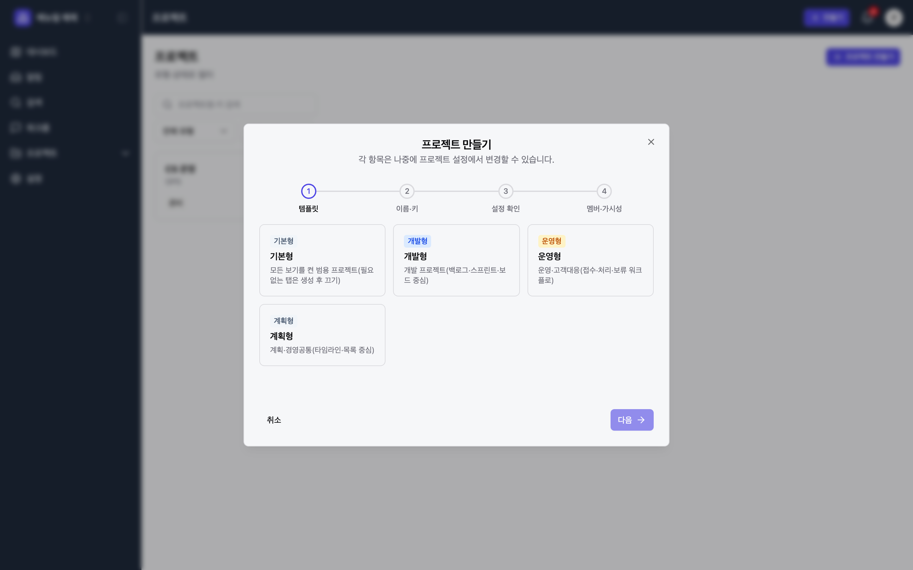
2-2. 이름·키·기간 입력
[다음]을 누르면 2단계입니다. 프로젝트명과 키(접두어)를 정합니다. 키는 모든 업무 번호의 앞자리가 됩니다(예: 키가 SHOP이면 업무는 SHOP-1, SHOP-2 …).
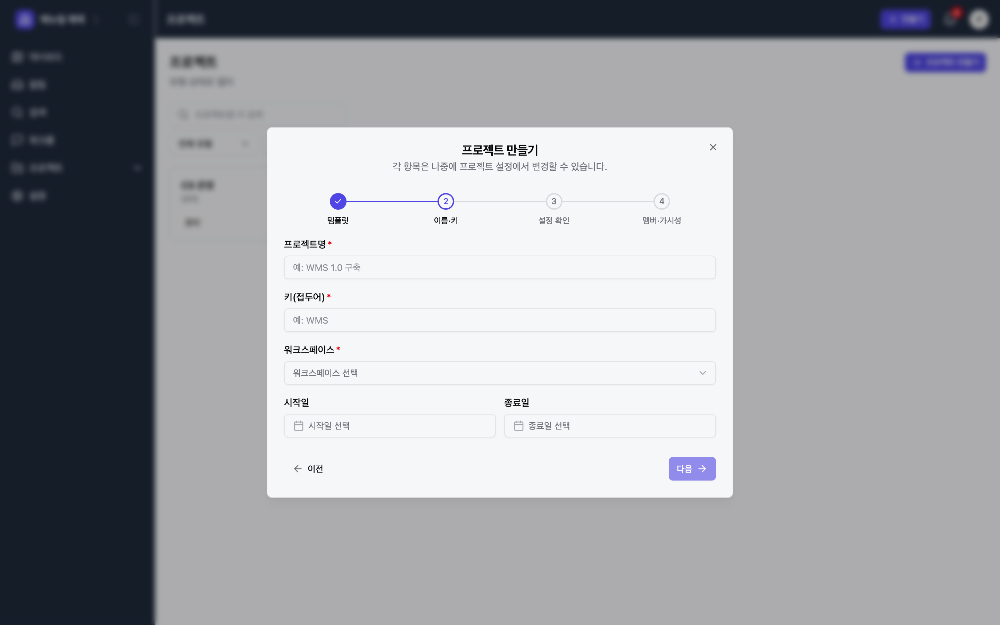
이어지는 3단계(설정 확인)에서는 템플릿이 채운 업무 유형·탭을 확인하고, 4단계(멤버·가시성)에서 함께 작업할 멤버를 초대하고 공개/비공개를 정한 뒤 [프로젝트 만들기]로 완료합니다.
3에픽 만들기
에픽은 "여러 스프린트에 걸친 큰 목표"입니다. 먼저 에픽을 세워두면 이후 만드는 스토리·태스크를 거기에 묶을 수 있습니다.
- 화면 우상단의 [+ 만들기] 버튼을 누릅니다. 어느 화면에서든 업무를 만들 수 있습니다.
- 업무 유형에서 Epic을 선택합니다.
- 요약에 에픽 제목을 "…으로서, …이 필요합니다" 형식으로 적습니다(작성 규칙 참고). 예: "사용자로서, 빠른 간편결제 수단이 필요합니다". 설명·우선순위·라벨은 선택입니다.
- [+ 만들기]로 저장합니다. 여러 개를 연달아 만들 땐 [다른 항목 만들기]를 체크하면 모달이 유지됩니다.
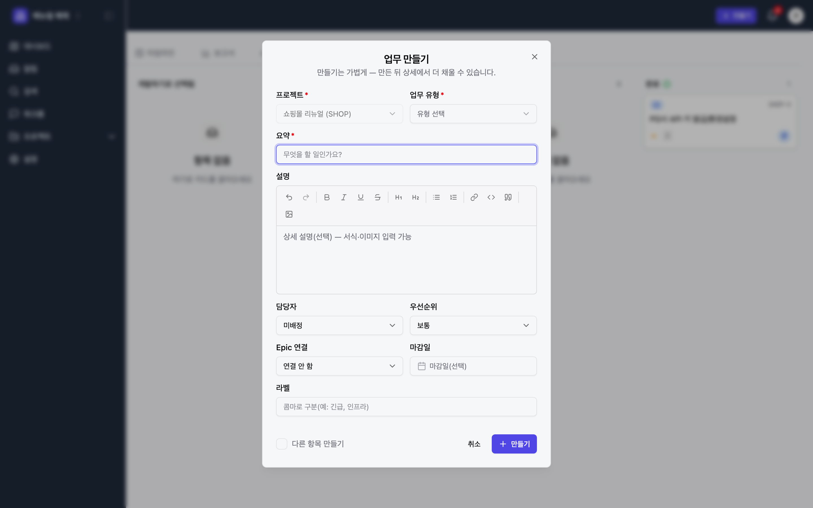
이 예제에서는 에픽 두 개를 만들었습니다 — Epic 결제 시스템 개편(SHOP-1), Epic 상품 검색 고도화(SHOP-2).
4업무를 에픽에 접목
에픽 아래에 들어갈 스토리·태스크·버그를 만들면서 상위 항목(Epic)을 지정하면, 자동으로 그 에픽의 하위로 묶입니다.
- [+ 만들기] → 유형을 Story 또는 Task로 선택합니다.
- 요약은 스토리면 "…는 …를 수행하여 …한다"(비즈니스 언어), Dev/Task면 개발자 언어 그대로 적습니다. Epic 연결 칸에서 앞서 만든 에픽을 고릅니다.
- 담당자·우선순위를 지정하면 보드·보고서에 바로 반영됩니다.
- 저장하면 해당 에픽의 하위 항목 진행률에 자동 집계됩니다.
이렇게 만든 에픽 상세를 열어 보면, 하위 항목들이 진행률 바와 함께 한눈에 보입니다.
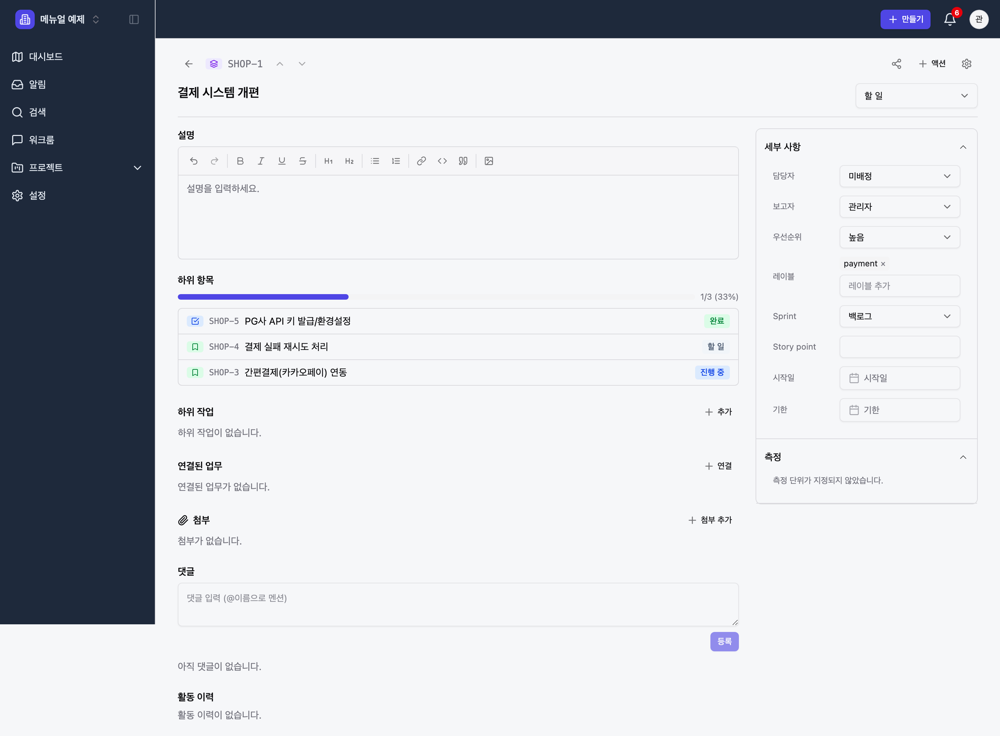
업무 상세에서 할 수 있는 것
업무를 클릭하면 상세가 열립니다. 유형에 따라 본문 섹션이 달라집니다.
| 유형 | 전용 섹션 |
|---|---|
| Story | 인수 조건(줄 단위 목록) |
| Task | 작업 체크리스트, 공수(Story Point) |
| Bug | 재현 절차 · 기대 결과 · 실제 결과 · 환경 · 심각도 |
공통으로 설명(리치 에디터)·하위 작업·연결된 업무·첨부·댓글·활동 이력이 있고, 우측에는 담당자·우선순위·라벨·스프린트·스토리포인트·기간 등을 바로 고치는 세부 사항 패널이 있습니다.
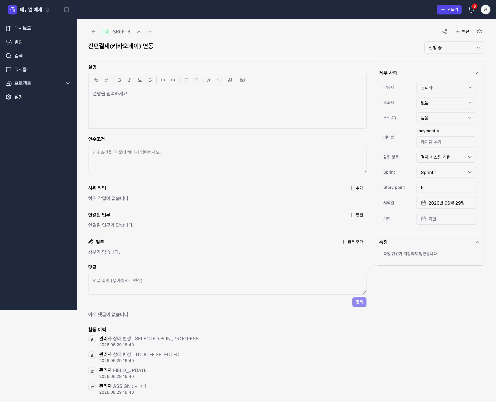
5백로그 정리
백로그는 "아직 스프린트에 넣지 않은 할 일 더미"입니다. 여기서 우선순위를 정하고 어떤 일을 다음 스프린트에 넣을지 고릅니다.
프로젝트 탭에서 백로그를 엽니다. 위쪽에는 스프린트 구역, 아래쪽에는 백로그 영역이 있습니다. 항목을 드래그해서 스프린트와 백로그 사이를 옮깁니다.
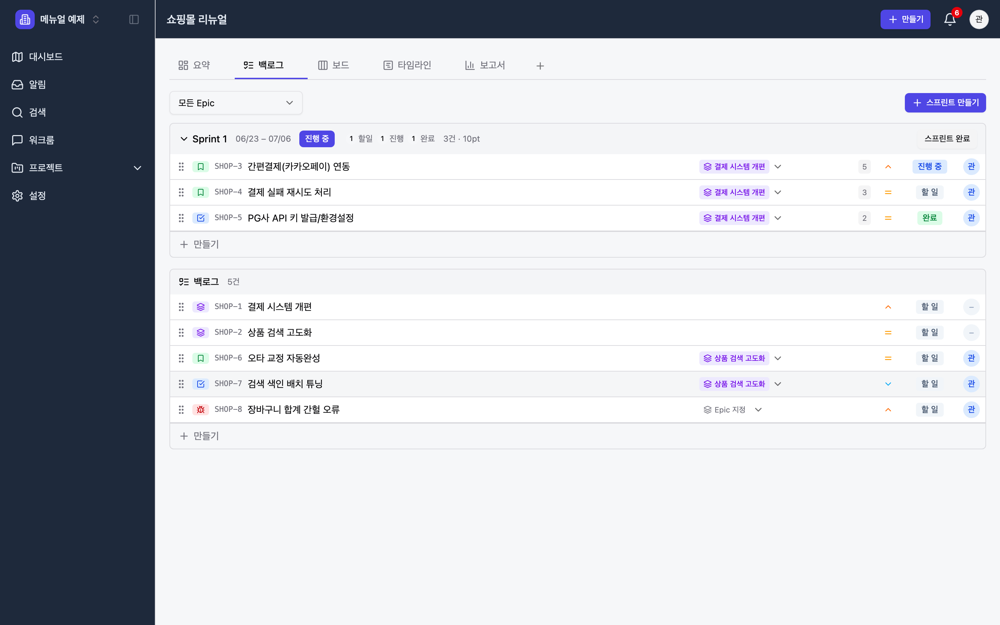
- 각 줄의 Epic 칩으로 어느 에픽 소속인지 한눈에 보이고, 클릭해서 바꿀 수 있습니다.
- 우측의 스토리포인트·상태 배지로 규모와 진행을 파악합니다.
- 모든 Epic 드롭다운으로 에픽별로 걸러서 볼 수 있습니다.
6스프린트 활용
스프린트는 "정해진 기간(보통 1~2주) 동안 끝낼 업무 묶음"입니다. WorkMap의 스프린트는 계획 → 진행 → 완료 흐름으로 움직입니다.
6-1. 스프린트 생성과 담기
- 백로그 화면 우측 상단 [+ 스프린트 만들기]로 스프린트를 만듭니다. 이름·목표·기간을 정합니다(예: "Sprint 1 / 간편결제 1차 오픈 / 6.23~7.06").
- 백로그 항목을 드래그해서 스프린트 구역에 넣습니다. 또는 업무 상세의 Sprint 필드에서 직접 지정합니다.
- 스프린트에 담은 항목의 스토리포인트가 합산되어 헤더에 표시됩니다(이 예제는 5+3+2 = 10pt).
6-2. 스프린트 시작·완료
| 동작 | 위치 | 효과 |
|---|---|---|
| 스프린트 시작 | 스프린트 헤더 → 시작 | 상태가 진행 중으로. 번다운 차트 기록 시작. 진행 중 업무의 착수일 자동 기록 |
| 스프린트 완료 | 스프린트 헤더 → 완료 | 완료 처리. 못 끝낸 항목은 다음 스프린트나 백로그로 이월 |
7보드로 진행 관리
스프린트가 시작되면 보드(칸반)에서 매일 일을 굴립니다. 카드를 드래그해 상태를 옮기는 것이 핵심입니다.
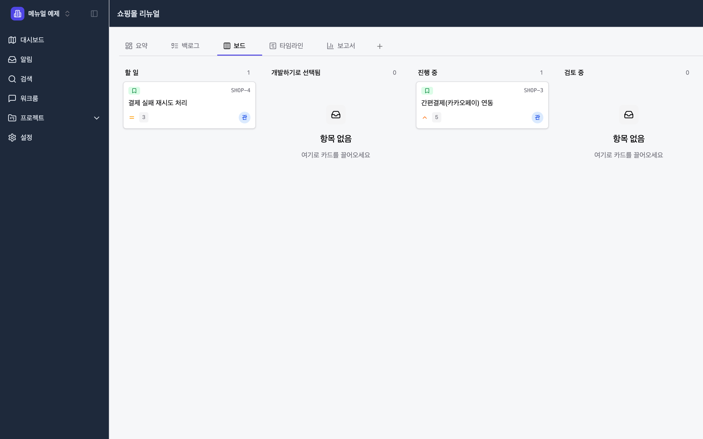
- 드래그로 상태 변경 — 단, 정해진 흐름(워크플로)을 벗어나는 이동은 막힙니다. 서버가 검증해 잘못된 이동은 자동으로 되돌립니다.
- 막힘 처리 — 진행이 막히면 막힘 상태로 옮길 때 차단 사유를 반드시 적게 됩니다. 막힌 업무는 회사 홈·검색에서 따로 모아 볼 수 있습니다.
- 카드 클릭 → 업무 상세가 열려 담당자·설명·댓글을 바로 다룹니다.
8진척·번다운 추적
스프린트가 잘 흘러가는지, 프로젝트가 얼마나 진행됐는지는 보고서 탭에서 봅니다.
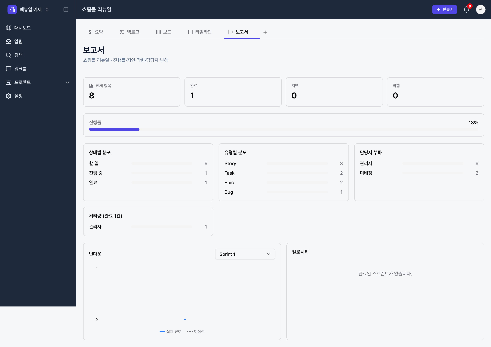
| 지표 | 의미 |
|---|---|
| 번다운 | 스프린트 동안 남은 작업이 이상선(점선)대로 줄고 있는지. 실제선이 위에 있으면 지연 신호 |
| 벨로시티 | 완료한 스프린트들의 처리량(스토리포인트). 다음 스프린트 계획의 기준치 |
| 상태/유형/담당자 분포 | 일이 어디에 몰려 있는지, 특정 담당자에 과부하는 없는지 |
프로젝트 첫 화면인 요약에서도 전체/완료/지연/막힘 지표와 진행률, 멤버를 빠르게 볼 수 있습니다.
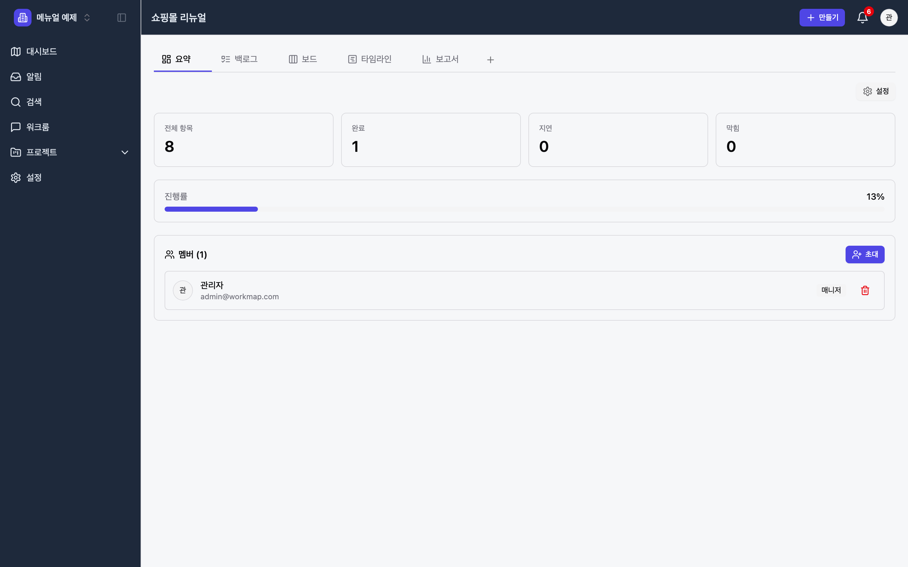
9운영형 프로젝트 운용
고객 문의·장애 접수 같은 운영 업무는 스프린트보다 "들어온 일을 접수하고 처리해 닫는" 흐름이 중요합니다. 운영형 템플릿이 이에 맞춰져 있습니다.
9-1. 개발형과 무엇이 다른가
개발형
- 탭: 요약·백로그·보드·타임라인·보고서
- 워크플로: 할 일 → 진행 중 → 검토 중 → 완료
- 에픽·스프린트 중심의 계획적 진행
운영형
- 탭: 요약·보드·목록·캘린더·승인·보고서
- 워크플로: 접수 → 확인 중 → 처리 중 → 현장확인
- 접수된 건을 빠르게 처리·승인하는 흐름
9-2. 접수 → 처리
운영 업무는 Task(요청·문의)나 Bug(장애)로 접수합니다. 보드의 컬럼이 운영 흐름에 맞춰져 있어, 접수된 카드를 처리 단계로 밀어가며 닫습니다.
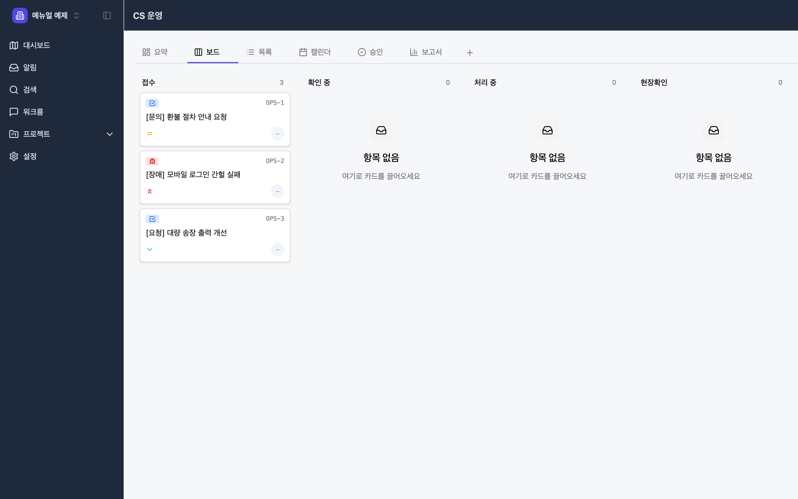
9-3. 승인 게이트
운영형에는 승인 탭이 있습니다. 특정 업무는 처리 전·후에 승인이 필요하도록 설정할 수 있고, 승인 대기/완료 건을 이 탭에서 모아 처리합니다.
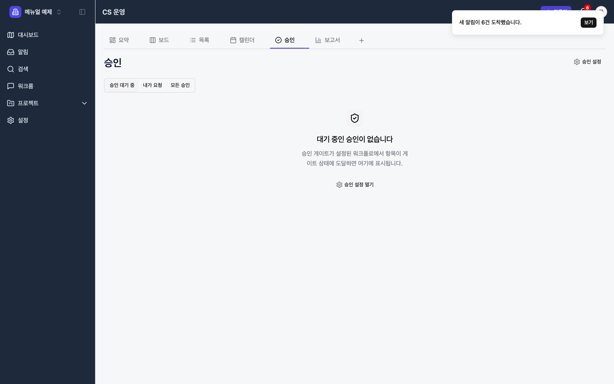
10같은 데이터, 여러 보기
0번에서 말한 "하나의 Task, 여러 관점"을 실제 화면으로 확인합니다. 같은 업무들이 보기만 바뀝니다.
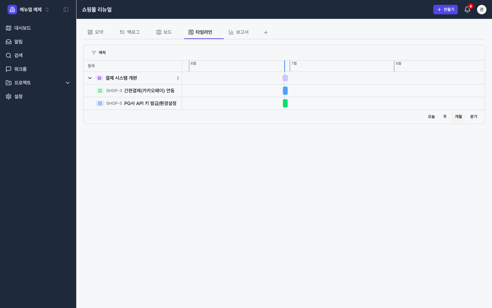
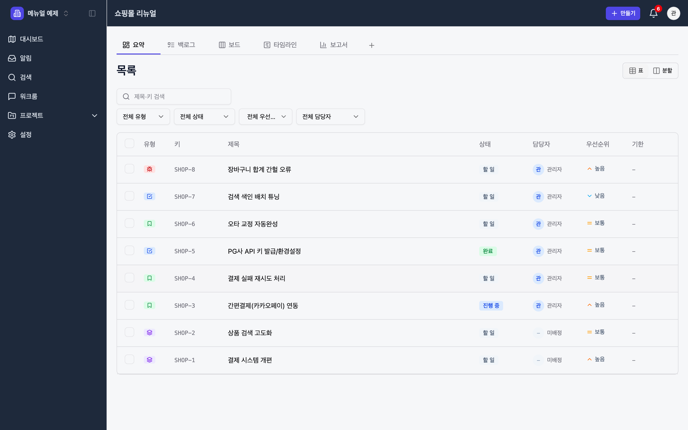
그 외에도 검색(전사 통합 검색·퀵필터)과 받은함(나에게 온 배정·멘션·알림)으로 내 일을 빠르게 찾습니다.
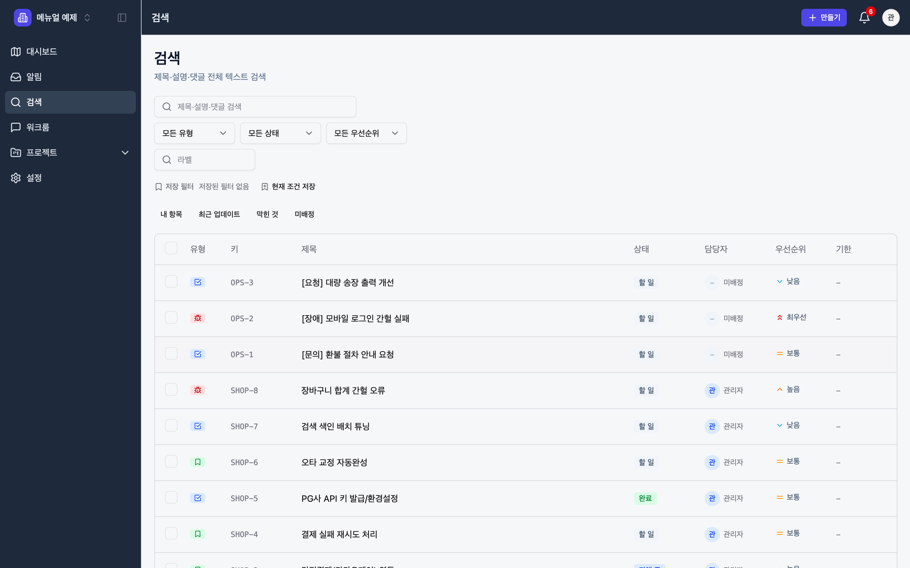
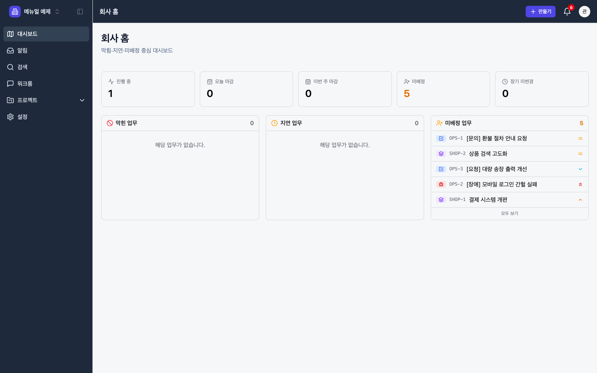
11빠른 참조표
실무 흐름 한 장 요약
| 단계 | 무엇을 | 어디서 |
|---|---|---|
| 1 | 워크스페이스 선택/생성 | 로그인 직후 워크스페이스 선택 화면 |
| 2 | 프로젝트 생성(템플릿 선택) | LNB 프로젝트 → [프로젝트 만들기] |
| 3 | 에픽 생성 | [+ 만들기] → 유형 Epic |
| 4 | 스토리·태스크 생성 + Epic 연결 | [+ 만들기] → Epic 연결 칸 |
| 5 | 백로그 우선순위 정리 | 프로젝트 → 백로그 탭 |
| 6 | 스프린트 생성·담기·시작 | 백로그 → [+ 스프린트 만들기] |
| 7 | 매일 카드 드래그로 진행 | 프로젝트 → 보드 탭 |
| 8 | 번다운·진척 확인 / 스프린트 완료 | 프로젝트 → 보고서 탭 |
자주 쓰는 동작
| 하고 싶은 것 | 방법 |
|---|---|
| 아무 데서나 업무 추가 | 우상단 + 만들기 |
| 업무를 에픽에 넣기 | 업무 만들 때/상세에서 Epic 연결 지정 |
| 업무를 스프린트에 넣기 | 백로그에서 드래그 또는 상세의 Sprint 필드 |
| 상태 바꾸기 | 보드에서 카드 드래그(워크플로 내에서만) |
| 막힘 표시 | 막힘 상태로 이동 시 차단 사유 입력 |
| 내 일만 보기 | 검색 → 퀵필터 내 항목 |